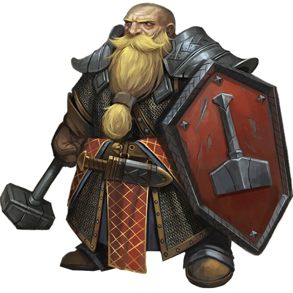

Dwarves
Dwarves in Celestia, despite being relatively rare, have a strong sense of belonging to their mountain kingdom in the north. They consider themselves to be of one tribe, and their mountain kingdom is seen as their true home, even for those who have never set foot there. Dwarves who have settled outside their mountain kingdom in Celestia still view themselves as visitors, and their allegiance remains with their mountain home.
However, some dwarves in Celestia have integrated themselves into the society and hold high positions within the religious factions. Their long lives, a trait common among dwarves, allow them to establish themselves and become an integral part of the communities they live in. Dwarves' skills in mining, metalworking, and craftsmanship are highly sought after in Celestia, especially in areas where mines are present. Small dwarven communities can be found near mines or other areas where their skills are in demand.
Despite their integration into Celestian society, dwarves always hold their mountain home as their true home. They may maintain their traditions, customs, and strong cultural identity, even as they adapt to the society they live in. Dwarves in Celestia may hold positions of respect and authority within the religious factions, bringing their unique perspective and contributions to the diverse landscape of Celestian society.
Overall, dwarves in Celestia are seen as skilled and valued members of the community, with their allegiance always tied to their mountain kingdom, even as they integrate themselves into the society they live in.
